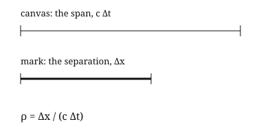
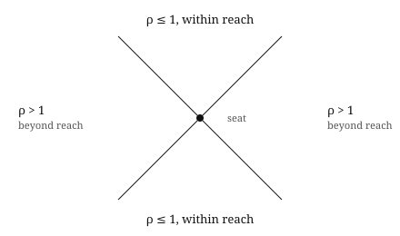
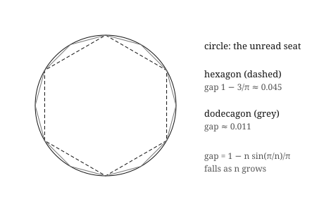
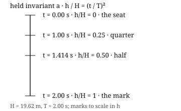
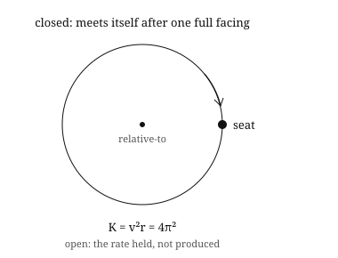
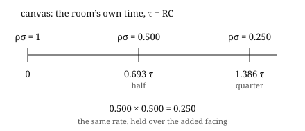

Scale Contrast Theory offers a grammar of cited observation. Every quantity can be offered as a distance read against a distance. When the two seats are spatial and temporal the contrast takes the form ρ = Δx/(cΔt). The contribution is the invariant equation reading = κ · I · Cᵖ and the audit format that records the standing of each reading.
The disparity is the relation itself, not a relation among isolated terms. Distance is expressed due to scale/ratio disparity. The negotiation is a disparity of expression, offering expression. Expression is relative to distance. Distance contrasted can only offer distance.
ρ = Δx / (c Δt)
A ratio is not a measure applied to two distances. It is the disparity itself when one contrast is faced against the other. Δx and cΔt are not inputs. They are the two seats of the same facing. ρ is that facing held as one. There is no operation that produces the ratio. The ratio is the expression of the disparity.
Δx is a spatial contrast. cΔt is a temporal contrast — the distance light spans in the facing. c is the constant mode of the disparity when the disparity is read as constant. ρ is the reading: one contrast held relative to another.
No external producer: the expression is closed; any label enters only after the reading.
The seat is co-given with the reading. Orientation offers the scale and the sign. The rate is held across the seats. Being and becoming are the same contrast read at the now. The now is not a moment on a line — it is the slice an orientation reads as Δt = 0.
The paper does not replace the legacy formalism or predict new results; it reads the same results as expressions of one relation.

The canvas is the span, cΔt: the distance light spans in the facing. The mark is the separation, Δx. ρ persists under rescaling of units; a change of relative motion changes ρ except at ρ = 1. Where ρ ≤ 1 the separation is within reach. Where ρ > 1 it is beyond reach.

ρ = 1 is the constant mode of the disparity. Mark and canvas are the same, so the relative change is zero. A constant is the unread limit of that mode — the seat at which the disparity offers no further distinction. Beyond or within reach, order is offered by orientation alone. Only the light edge and the side of the light-cone are preserved across orientations.
The legacy already uses ratio condensation. The gauge pressure at depth is the weight of the column over the area, so the ratio of the gauge pressure at 10 meters to that at 5 meters is 2. The legacy accepts this form. The grammar extends it: the same ratio condensation is the form of every measurement.
reading = κ · I · Cᵖ
The reading is the coefficient κ times the held invariant I times the canvas C raised to the exponent p. The local scale is the invariant’s seat; the scale is the canvas. The exponent p is the relative of the local scale to the scale.
The exponent is offered, not derived. The equation classifies seven cited cases (solar orbits, a whirlpool outside and inside its core, the flat galactic curve, local freefall, inverse-square gravity and the Casimir plates) by the exponent each seat offers, and checks that every member of a seat returns the same invariant. An eighth case, a string wound on a tube, marks the boundary of the equation.
Table 1. The cases.
| Seat | Observed | Invariant I | Canvas C | p | κ | Reading |
|---|---|---|---|---|---|---|
| Solar orbits | v² ∝ 1/r | r v² | r | −1/2 | 1 | v = κ √(I/C) |
| Whirlpool (outer) | v ∝ 1/r | rv | r | −1 | 1 | v = κ I/C |
| Whirlpool (core) | v∝r | v/r | r | +1 | 1 | v=κI·C |
| Flat galactic curve | v constant | v | r | 0 | 1 | v=κI |
| Local freefall | v∝t | a | t | +1 | 1 | v=κI·C |
| Inverse-square gravity | a ∝ 1/r² | a r² | r | −2 | 1 | a = κ I/C² |
| Casimir plates | a ∝ 1/d⁴ | ħcA/m | d | −4 | seated (π²/240) | a = κ I/C⁴ |
| String and tube | length per turn | (no simple I) | turns n | — | derived (1) | L = n √((2πr)² + s²) |
In the Casimir row A is the plate area, m the plate’s inertia and d the separation. In the string-and-tube row s is the rise per turn.
The string and tube lies outside the I-form and has no place on it. The row seats no invariant read against a canvas, so it does not take the form reading = κ · I · Cᵖ. It is a boundary of the equation, not an instance of it.
Kind classifies each row:
Standing records where each row stands:
The Marks. Each states a measurement that would count against the grammar as offered here.
The spectrum has a ceiling and a floor. The ceiling is the light edge, ρ = 1, shared by every seat. The floor is 1/2—the minimal contrast, the binary of contrast. The Planck length is the length formed from the seated constants—a concept, not a claimed limit. The floor is the 1/2, seated; the Planck length is the length, cited. Whether spacetime has a smallest increment is an open question.
The whole turn is written 360. Any N is a seat. 360 offers a simulation of a complete expression: enough divisors that the discrete steps remain whole numbers. It is not a privileged number. ρ per step is invariant; only the label changes.

The continuous turn is the circle. Because π is irrational, the circle and its discrete readings share no common unit. Every inscribed n-gon therefore leaves a unit-free gap
1 − n sin(π/n)/π.
The gap is the shortfall of the perimeter as a fraction of the whole. At n=6 it is 1−3/π≈0.045. As n grows the gap falls; the circle is the limit no finite seat reaches. It is the unread seat, and every polygon is a reading of it. 360 lets the simulation close under ordinary counting; the circle remains the continuous offer the discrete seats only approach.
Time is a metric. It is always read at the now.
Time is not a dimension beside distance. It is the canvas a separation is read against: temporal scale is distance scaled. The now is the slice an orientation reads as Δt = 0. It is a relative-to, not a moment on a line. The contrast of two times is a time, and no instant stands alone.
ρ is a magnitude, the same for Δt and −Δt. It gives reach, not order. Orientation offers the sign; the grammar does not derive the arrow. A later mark is not read as produced by an earlier one. Causality, if the word is wanted, is the now's: a rate held across seats and continued. The reading is offered; the route may be constituted; the law is declined.
Freefall. The held invariant is the acceleration and the reading is the speed. The reading is the speed, v ∝ t; the acceleration a is the held invariant. With time as canvas, v = a t, so p = +1 and κ = 1. With height as canvas the same fall holds v²/h constant, v = √(2a h), so p = +1/2 and κ = √2. The two canvases are related by squaring.

Canvas: the disparity. Rate: the room's rate, read from freefall. Mark: the height fallen, h, read against the whole height, H, as the elapsed time, t, is read against the whole time, T.
h / H = (t / T)²
Equal time seats are faced. Distance marks grow as the square. The magnitude is seated at the whole. The label follows after. The square is the same expression, not a second rate.
The continuation holds while the rate is one rate, and stops where a second rate, drag, enters.
Orbit is a closed relative-to.

One full turn at 1 AU is one year. With the year as the unit of time and the AU as the unit of distance, the tally returned is K = v²r = 4π². It is closed in that the engagement meets itself after the full facing, and open in that the rate is held, not produced from a prior.
The closed turn returns rv² as one expression. The table cites that closed relative-to. No further label is required for the reading.
Each row uses three inputs: the semi-major axis (a, in AU), the orbital period (P, in days), and the constant mode of the disparity, c. The orbital regard v is computed as 2π times the orbital radius, divided by the period.
| Station | a (AU) | P (days) | v (m/s) | rv² (m³/s²) | L (km) |
|---|---|---|---|---|---|
| Mercury | 0.38710 | 87.969 | 47,872 | 1.32713 × 10²⁰ | 2.953 |
| Venus | 0.72333 | 224.701 | 35,021 | 1.32712 × 10²⁰ | 2.953 |
| Earth | 1.00000 | 365.256 | 29,785 | 1.32713 × 10²⁰ | 2.953 |
| Mars | 1.52368 | 686.980 | 24,129 | 1.32709 × 10²⁰ | 2.953 |
| Jupiter | 5.20427 | 4332.59 | 13,068 | 1.32951 × 10²⁰ | 2.959 |
| Saturn | 9.58202 | 10759.22 | 9,689 | 1.34561 × 10²⁰ | 2.994 |
| Uranus | 19.22941 | 30685.4 | 6,818 | 1.33704 × 10²⁰ | 2.975 |
| Neptune | 30.10366 | 60189.0 | 5,441 | 1.33331 × 10²⁰ | 2.967 |
L = 2 r v² / c².
Same inputs and same calculation for every row.
The planets hold r v². Taking r as the orbit’s semi-major axis and v = 2πr/T, every planet returns the same seated length L = 2 r v² / c² ≈ 2.953 km (r v²/c² ≈ 1.48 km) within the precision of mean orbital elements (Williams n.d.); the giant planets agree less closely, because their own masses and mutual pulls enter the elements. The agreement is Kepler’s observed regularity, not a constant imposed from outside. The legacy names the reading GM; the grammar reads the length, and the label is after.
The inner four planets (Mercury, Venus, Earth, Mars) agree to four significant figures: L = 2.953 km and rv² = 1.327 × 10²⁰ m³s⁻² in every case. Orbital regard falls by roughly a factor of two between Mercury and Mars, and the product holds steady.
Across the galactic seats the speed is held, so ρ = v/c is held. The negotiation held will see the seated length rise in proportion to r. This is a seeing, not an empirical match: it restates the flat curve rather than accounting for it, and the audit grades it R. The legacy labels the rise enclosed mass growing with radius, or dark matter; the grammar reads the length rising and does not seat a substance.
The a₀ candidate. The candidate offers the acceleration scale a₀ = c H₀ / 2π. With H₀ = 67.4 km s⁻¹ Mpc⁻¹ (Planck Collaboration 2020) the offer is 1.04 × 10⁻¹⁰ m s⁻²; with H₀ = 73.0 (Riess et al. 2022) it is 1.13 × 10⁻¹⁰. The observed scale is 1.20 ± 0.02 (random) ± 0.24 (systematic) × 10⁻¹⁰ m s⁻² (McGaugh, Lelli & Schombert 2016). The offer falls within the systematic error but not the random error: conditionally aligned, not a hit and not a miss. The testable part is the consequence that a₀ follows H(z), and so should be larger at earlier times; the evolution of the relation with redshift is now being measured (Ciocan et al. 2026).
Capacitor is a disparity read alone.

The room is a capacitor through a resistor. Canvas: the room's own time, L, dual-named RC after the reading. Mark: the charge ratio ρσ = q/q₀. The rows show ρσ = e^(−ρt) and the disparity property ρσ(t₁ + t₂) = ρσ(t₁) · ρσ(t₂). The thinning over a disparity does not depend on where the disparity began. Orientation seats the sign; the equation does not. A second rate ends the continuation.
| Expression | Seat | Orientation | Calculation under ρ = Δx / (c Δt) | Labels after |
|---|---|---|---|---|
| Freefall | Vertical line | Facing down | At 1 s: Δx = 4.9 m. At 2 s: Δx = 19.6 m. Acceleration is the held invariant; speed is the reading that carries the exponent. Distance scales as count squared. | g ≈ 9.8 |
| Orbit | Closed circle | Facing 360 | K = v²r = 4π². For r = 1, v = 2π. Relative-to closed. | — |
| Cooling cup | Temperature contrast | Facing the thinning | ρσ(2) = ρσ(1)·ρσ(1). Multiplicative across the sum. | Decay constant |
Each row is the same form under a different orientation. The seat is offered with the reading. Orientation offers the scale and the sign. No external selection rule is required. The form holds. The relative remains. Labels after.
The row is cited. The facing is the expression. No producer is seated. Labels follow after. The grammar seats the observational rows that lie inside its spectrum and marks the seat at which a seat dissociates. The rows are cited, not recovered—the reading is the seating, and the label follows after.
Any negotiation may be expressed as a 360 pie. The pie is the whole. The sectors are the seats. The reading is the sector against the whole.
The pie is the containment that shows how the same disparity returns. Linear seats are the mark; the square is that mark faced against itself. One expression appears once as the equal divisions and once as their square. The pie closes on that return. Nothing is added.
The pie is not a sequence. It is the whole, divided. It can be read forwards or backwards; the direction is the orientation. The sectors do not change. The reading is the same.
The pie is recursive. The degree does not change. What changes is the relative expression.
A change of rate does not open a new canvas; the canvas remains, and only the marks, the later sectors, are translated.
A running 360 pie incorporates its variables as the shifting degrees (for example R/v); the degrees must continue to balance to the whole.
Freefall as a pie: equal time sectors, squared height marks. H = 19.62 m, T = 2.00 s.
| Time sector | t / T | h / H = (t / T)² | h |
|---|---|---|---|
| 0° | 0.00 | 0.0000 | 0.000 m |
| 90° | 0.25 | 0.0625 | 1.226 m |
| 180° | 0.50 | 0.2500 | 4.905 m |
| 270° | 0.75 | 0.5625 | 11.036 m |
| 360° | 1.00 | 1.0000 | 19.620 m |
Begin at the whole: H = 19.62 m at T = 2.00 s. Run (t / T)² backwards to recover the earlier sectors.
| Time sector | t / T | h = H · (t / T)² |
|---|---|---|
| 360° | 1 | 19.620 m |
| 270° | ¾ | 11.036 m |
| 180° | ½ | 4.905 m |
| 90° | ¼ | 1.226 m |
| 0° | 0 | 0 m |
The marks returned are the marks read forward. The direction is the orientation.
Light through 1.0 m of air, then 1.0 m of water, n = 1.333. The whole is the total, 7.78 ns, written 360. The first rate holds to 154.3°; the remaining degrees are translated to the second rate. The canvas remains.
| Sector | Δt | Δx | Rate |
|---|---|---|---|
| 0° | 0 ns | 0 m | air |
| 77.2° | 1.669 ns | 0.500 m | air |
| 154.3° | 3.336 ns | 1.000 m | seat of change |
| 257.2° | 5.560 ns | 1.500 m | water |
| 360° | 7.782 ns | 2.000 m | water |
One pie keeps a single canvas. When the rate changes inside the whole, later sectors are translated. The total matches ordinary segmented arithmetic. The pie supplies the uniform engagement, not a different number.
A 45° launch in vacuum, flight whole T = 2.00 s, range R = 19.62 m. One time whole carries two marks: the horizontal, linear in t / T; the drop below the launch line, squared in t / T. The height is their contrast.
| Time sector | t / T | x = R · (t / T) | drop = H · (t / T)² | height = x − drop |
|---|---|---|---|---|
| 0° | 0 | 0 m | 0 m | 0 m |
| 90° | ¼ | 4.905 m | 1.226 m | 3.679 m |
| 180° | ½ | 9.810 m | 4.905 m | 4.905 m |
| 270° | ¾ | 14.715 m | 11.036 m | 3.679 m |
| 360° | 1 | 19.620 m | 19.620 m | 0 m |
The same squared marks as the fall. The same whole. Two readings side by side.
Every measurement is a disparity: one distance read against another.
ρ = Δx / (c Δt).
The disparity is the relative-to itself. c is the constant mode of the disparity when the disparity is read as constant. A constant of disparity is consistent. Orientation offers the scale and the sign. The rate is held. Being and becoming are one contrast at the now. The grammar takes the commitment that there is only one negotiation.
Two orientations read that disparity. The Lorentz seating relates the two readings; it is named, not yielded from ρ alone.
Labels after. No producer outside the expression. The mechanism is the expression functioning as the relative-to.
SCT is one grammar in a relational family. The family includes Nāgārjuna’s emptiness, Whitehead’s process, structural realism, and more recent relational grammars (Wade’s Projected Operational Grammar, August 2026). The primitives differ (SCT’s is the relative-to; Wade’s is the Address; Nāgārjuna’s is emptiness); the stance is the same (the relation is primitive; no producer). SCT’s contribution is the relative-to, the audit format, and the checkable math.
Current
Scale Contrast Theory: Invariant Negotiation by William P. Robinson (13 November 2026). DOI 10.5281/zenodo.24201339.
The paper does not replace the legacy formalism; it reads the same results as expressions of one relation.
Earlier stages
Zenodo archive
Every paper above and the deposits below are formal records on Zenodo, each with a permanent DOI. Listed newest first.
Send a statement or a query. The message opens in your mail client, addressed to the contact below.
Bill Robinson · scalecontrast@zohomailcloud.ca